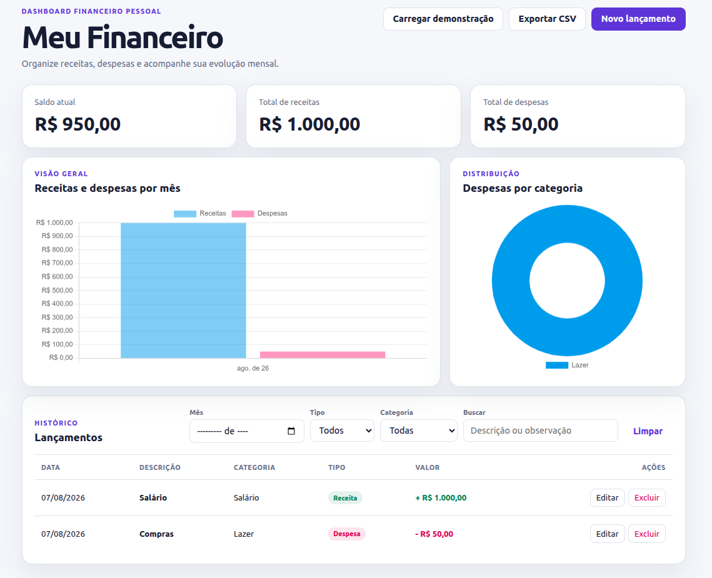

Personal Finance Dashboard

Full-Stack Development / Python + JavaScript
I built this personal finance dashboard to create a complete full-stack application for organizing income and expenses. The project combines a Flask back end, a SQLite database, and a JavaScript interface with filters, charts, transaction management, and CSV export.
Methods
CRUD Operations
REST API
Data Validation
Responsive Design
Data Visualization
Tools
Python
Flask
SQLite
JavaScript
Chart.js
Render
Technical Overview
Flask serves the application and exposes API routes for creating, reading, updating, and deleting financial transactions.
SQLite stores each transaction with its description, value, type, category, date, notes, and creation timestamp.
JavaScript consumes the API, updates the dashboard without page reloads, applies filters, manages the transaction modal, and renders charts with Chart.js.
Main Features
• Registration of income and expense transactions.
• Editing and deletion of existing transactions.
• Automatic calculation of balance, total income, and total expenses.
• Filtering by month, transaction type, category, and search text.
• Monthly comparison chart for income and expenses.
• Expense distribution chart organized by category.
• CSV export and optional demonstration data.
• Responsive interface deployed online with Render.
Application Flow
When a transaction is submitted, JavaScript sends its data to the Flask API as JSON.
Flask validates the information and stores it in SQLite before returning the saved transaction to the interface.
The dashboard then reloads the transaction list, summary values, categories, and chart data so the interface remains synchronized with the database.
Challenges
• Connecting the JavaScript interface to Flask API routes.
• Keeping transaction lists, totals, filters, and charts synchronized.
• Validating financial data before saving it to the database.
• Managing modal behavior for both new and edited transactions.
• Preparing the application for deployment with Gunicorn and Render.
What I Learned
• I learned how Flask connects a browser interface to Python logic.
• I improved my understanding of API routes and CRUD operations.
• I practiced storing and retrieving structured data with SQLite.
• I gained experience building dynamic charts from API data.
• I learned how to prepare and deploy a Python web application online.
